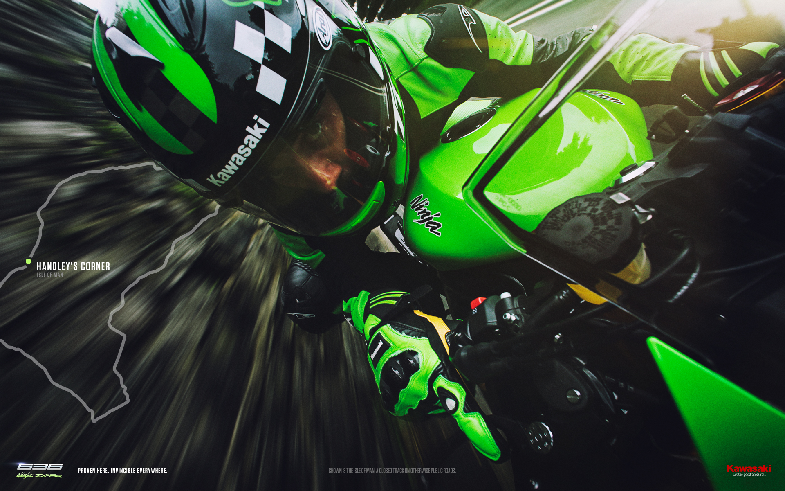
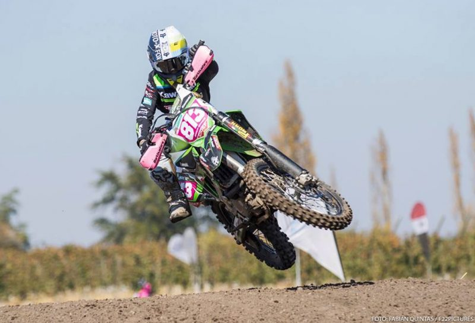

El Campeonato Mundial de Superbikes conocido como WorldSBK inició este año en el mes de febrero en el circuito Phillips Islands y ya lleva realizado nueve encuentros. Quien lidera la competencia es el piloto norirlandés Jonathan Rea, quien en esta oportunidad conduce la Kawasaki Ninja ZX10R.

El año pasado fue una temporada excepcional para Rea ya que con el Kawasaki Racing Team logró sumar catorce victorias y exhibir un dominio abrumador que culminó con la obtención de su primera corona mundial.
Logros Deportivos
Ignacia Riveros piloto profesional quien conduce con una Kawasaki KX 250, fue coronada por segunda vez como Campeona Latinoamericana de Motocross en la categoria WMX 250. Recibiendo la medalla en junio de 2019 en la ciudad de Bogota, Colombia, repitiendo la hazaña que la dejo en el podio en la ciudad de Pucon en el año 2017

Así mismo otro piloto logro coronarse como Campeón Latinoamericano de Motocross en la categoría Master, estamos hablando de Felipe Podesta quien maneja una KX 450, demostrando así toda la experiencia adquirida luego de 19 campeonatos nacionales. Evento que se llevo a cabo en la ciudad de Calama en el mes de noviembre.